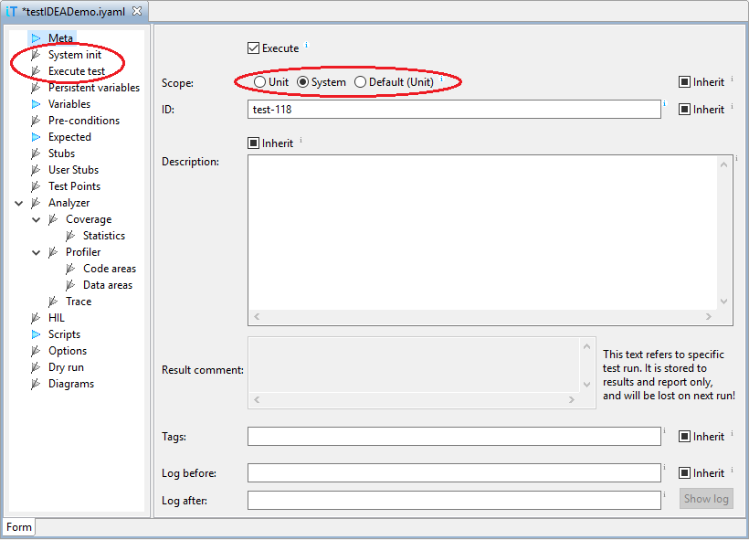

The main difference to unit tests are target initialization and test execution. While unit tests define test start as function entry, and test end at function exit, system tests have no such clear definitions of test start and stop, so we have to define them explicitly either in testIDEA or script.
There are three main approaches recommended for system tests:

Example of minimalistic script extension function:
def minimalSystemTest(self):
self.testCtrl = self.__getTestCaseCtrl()
self.testCtrl.run() # Run the target.
time.sleep(2) # Test specific stuff.
self.debug.stop() # Stop the target
return None # None marks success
Example of more complex script extension function:
def systemTestRun(self):
self.testCtrl = self.__getTestCaseCtrl()
# 1. Initializa target for system test, for example set SFRs,
# set breakpoint where the test should stop.
self.testCtrl.modify('isDebugTest', '1')
# 2. Use testCtrl to run target.
self.testCtrl.run()
# 3. Do test specific stuff, for example wait for stop condition
while True:
val = self.debug.evaluate(ic.IConnectDebug.fRealTime, 'iCounter')
py_iCounter = val.getInt()
print('iCounter =', py_iCounter) # print for debugging
if py_iCounter > 100:
break
# 4. Stop the target explicitly
self.debug.stop()
# 5. Make value available in the report.
self._isys_initFuncInfo = 'iCounter = ' + str(py_iCounter)
# 6. Verify results
val = self.debug.evaluate(ic.IConnectDebug.fRealTime, 'g_mode')
py_g_mode = val.getInt()
if py_g_mode > 200:
return 'Test failed! g_mode = ' + str(py_g_mode)
return None # None marks success